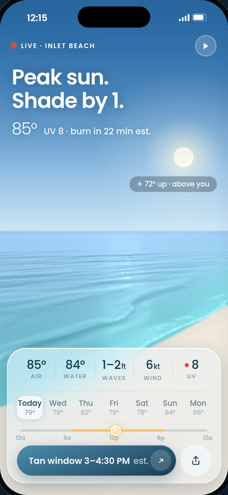

The left is your supplied reference PNG. The right is the actual branch app at 390 × 844, using its real forecast. This is a review surface, not screenshot or 2 px proof. Operate the app normally.
Open issue: Saturday’s reference has Back to now in place of Play, so there is no visible way to start Watch for Saturday. The reference is preserved pending your decision.
Open the app full screen · Original HTML board · Verification scope
